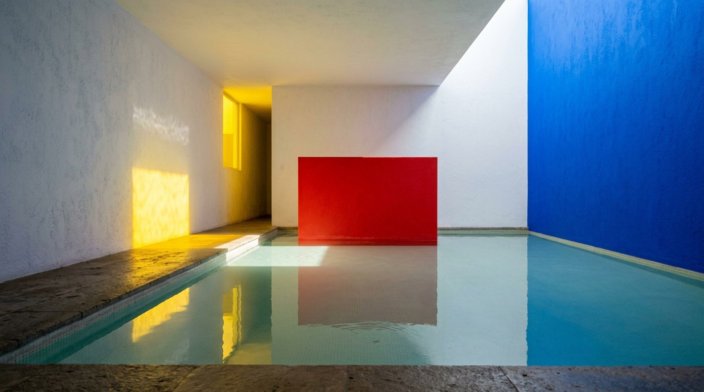
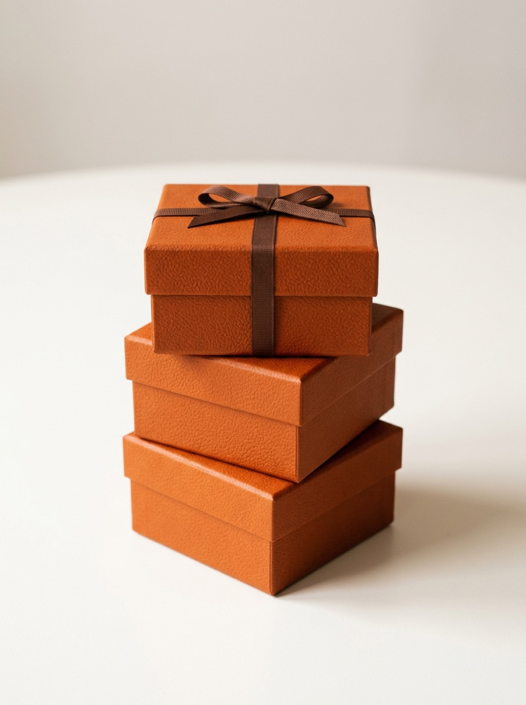
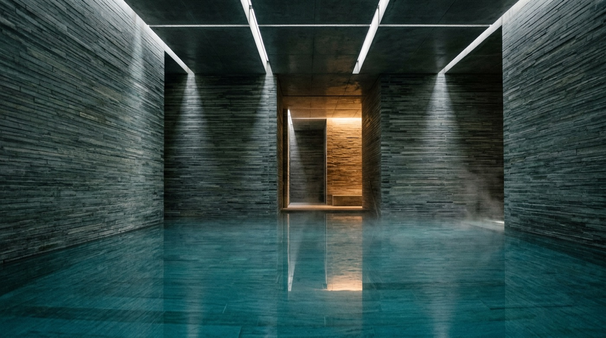
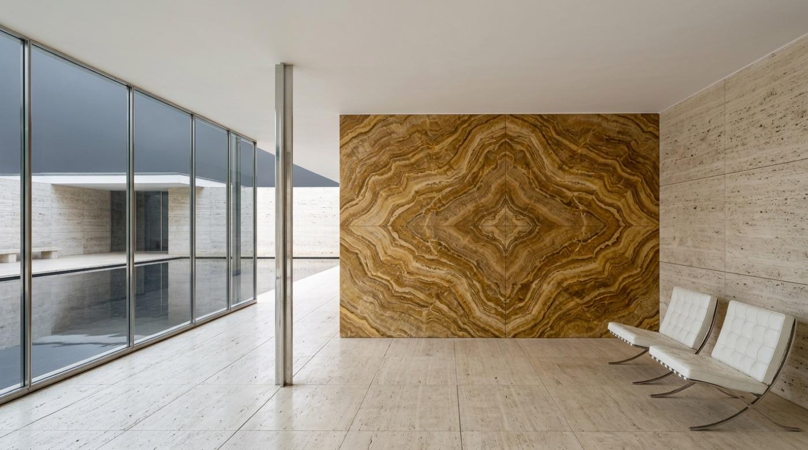

Count the saturated decisions
Barragán built this room from white plaster and water, then made three color decisions: a blue wall, a corridor of yellow glass, a red plane. Each appears once. Count a palette before judging it.

One ultramarine wall, one corridor of yellow glass, one red plane standing in the water. Barragán's last house spends each saturated color exactly once.
Two colors, locked
A constrained palette at fixed proportions becomes identity. Powder blue covers ninety percent of the Porsche; one marigold stripe takes the rest. Hermès has run on one orange and one brown since 1942.
Powder blue at ninety percent, marigold at ten, proportions locked across every car the team ran — identifiable at 300 km/h and at thumbnail size.

Orange was the only board stock left in occupied Paris; Hermès kept it and added the brown ribbon in 1949. Two colors, no third, no logo needed.
Spend it once
Rams and Lubs gave the ET66 a matte-black case, charcoal digit keys, dark-brown operators — and one yellow key, the equals. Apple lifted the layout, and the rule, for the iOS calculator.
Braun ET66 · 1987. Dieter Rams & Dietrich Lubs. Charcoal digits, brown operators, one yellow equals: the only saturated key on the device. It computes; press the domes. Key glyphs in system-ui standing in for Braun's grotesque. Built live in CSS — inspect it.
Neutral chrome, one tint
iOS 7 deleted leather, linen and gloss overnight. Surfaces went flat white, separators became one-pixel hairlines, and each app got one tint color for everything tappable. Borders vanished; color alone now meant "press me."
iOS 7 Mail · 2013. Flat white, 1px #C8C7CC hairlines, and a single #007AFF tint marking everything tappable, with no button borders anywhere. Scroll the list: the bar's blur is real, a material the screen can actually be. system-ui stands in for Helvetica Neue. Built live in CSS — inspect it.
Content is the color
Instagram's 2016 rule: grayscale chrome, saturated content. Spalter's team stripped the blue interface to black outline glyphs on white. The community's photographs get the entire saturation budget.
Instagram feed · 2016. Chrome at 0% saturation: thin black outline glyphs on white, while the photo region holds all the color. Tap the heart; feedback is the one sanctioned exception. Built live in CSS — inspect it.
Color as code
Color can be vocabulary instead of decoration. On the Terminal, amber means label; green and red are reserved for up and down. The palette has barely moved since 1982 because traders read it preattentively.
Amber labels on black; green and red held strictly for up and down. The keyboard's colored keys mirror the on-screen code — a palette frozen for forty years.
Measured, not picked
Albers held one format constant for twenty-six years, leaving color against color as the only variable. The two yellow centers below are the same hex; your eye refuses to agree. Judge color in context, never on a swatch.
Both center squares are #F4D23C. With the 1:2:3 bottom-displaced geometry held constant, color interaction is the only variable left.
Solarized turned relativity into arithmetic: sixteen colors placed in CIELAB so dark and light mode swap with identical perceived contrast.
Eight monotones placed by measured CIELAB lightness, eight accents at fixed wheel angles. Swap the symmetric monotone pairs and dark mode keeps light mode's exact contrast.
Honest surfaces
Good design is honest, Rams said — surfaces that don't pretend. The FT has printed on salmon newsprint since 1893; in 2016 it set the whole site on that paper, #FFF1E5, no pure white anywhere.
Central banks split over the price of patience
Policymakers diverge on the timing of rate cuts as services inflation refuses to fall in line with goods
The long shadow of cheap money
Carmakers quietly retire the chrome era
Gold's quiet decade comes to an end
FT.com, Next FT · 2016. The entire page sits on #FFF1E5, the 1893 salmon newsprint translated to a pixel: one inherited background color doing the work of a logo. Teal #0D7680 is the lone accent; hairlines are #CCC1B7. Literata stands in for Kris Sowersby's Financier. Built live in CSS — inspect it.
The material is the palette
The deepest honesty is no pigment at all. Legend says Mercedes scraped the W25's paint off overnight to make weight; the bare aluminium won, and stayed for ninety years. Zumthor built an entire bath from one stone.
Bare hand-formed aluminium, every rivet and seam exposed. The disputed story says paint was scraped off to make 750 kg; the silver stayed for ninety years.

Some 60,000 strips of one local quartzite, laid in courses of three heights that always compose the same module. One material, one rule, an entire building.
One luxurious surface
Mies closed the argument in 1929. Travertine, grey glass and eight chromed columns make the neutral field; the one accent is a book-matched wall of golden onyx. The stone's veining is the only ornament.

A travertine and grey-glass neutral field; the one accent is a single book-matched wall of golden onyx doré, its veining the only decoration.
A color is never seen alone: build on quiet neutrals and spend exactly one honest accent where attention must go.
In your systems
Racing-green already obeys this chapter: deep green panels as the neutral field, ivory ink, one gold accent, #E8B23A. The harder question goes to neo-tactile. Its cream paper #e9e3d6 and single vermilion #e5462b pass the count, but the 2–3px emboss travel simulates a molded surface the screen cannot be; iOS 7 called that leather and deleted it. Calm-ink passes Rams' test: paper that admits it is paper, ink that never reaches #000. Ask of neo-tactile: is it a material the pixel can honestly be, or a costume?
Albers in CSS: place two identical swatches of one mid-tone — your racing-green will do — on a warm-light background and a cool-dark one. Adjust one swatch until the two look identical, then read off how many hex steps the correction took. You have just measured color relativity inside your own palette.
Vocabulary
- Color relativity — "one and the same color evokes innumerable readings." Josef Albers, Interaction of Color, 1963.
- Material honesty — good design is honest; surfaces that don't pretend to be what they are not. Dieter Rams, Ten Principles of Good Design, Vitsoe.
- Smallest effective difference — use the quietest contrast that still does the job. Edward Tufte, Visual Explanations, 1997.
- Neutral foundation + single accent — the 60-30-10 tradition; the grays-first method in Wathan & Schoger, Refactoring UI, 2018.
Sources: Albers, Interaction of Color (1963) · Rams, Ten Principles of Good Design (Vitsoe) · Tufte, Visual Explanations (1997) · Wathan & Schoger, Refactoring UI (2018) · Schoonover, Solarized (2011).